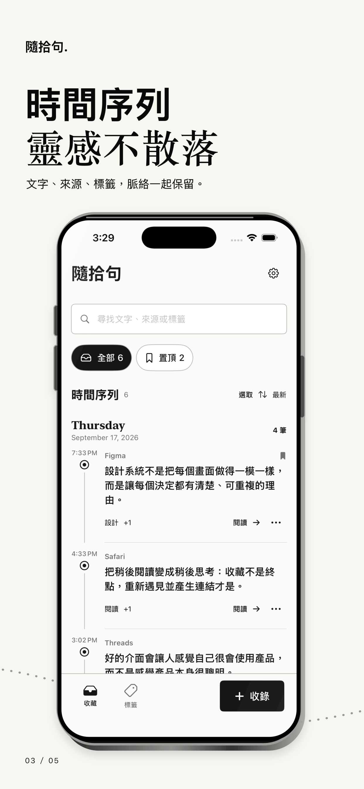
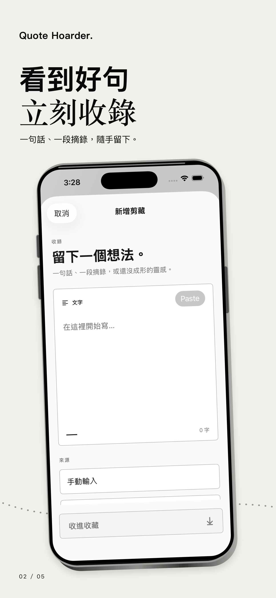
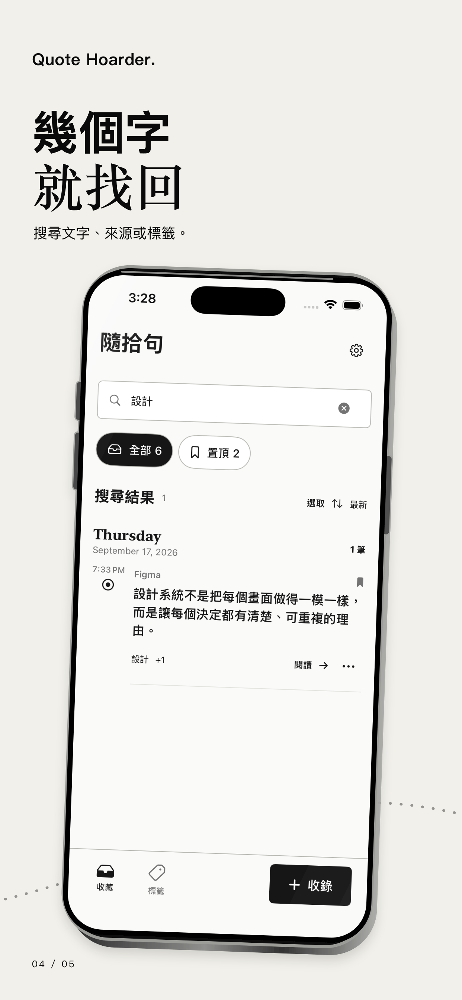

從正在閱讀的地方收錄Capture where you read
從 iOS 分享選單保存文字、網址或圖片中的文字，也能手動輸入或使用快捷指令。
Save text, links, or text recognized from an image through the iOS share sheet, manual entry, or Shortcuts.
私人文字收藏盒Your private quote archive
從 Safari 或其他 App 分享一句話，連同來源一起收進隨拾句。之後用文字、來源與標籤快速找回。
Save a passage from Safari or another app with its source intact. Find it later by text, source, or tag.
CAPTURE · ORGANIZE · RETURN
隨拾句專注在一件事：讓收錄夠快、來源不丟、回頭尋找不費力。沒有帳號，也不需要先建立複雜分類。
Quote Hoarder stays focused: capture quickly, preserve the source, and find the passage again without a complicated filing system.
從 iOS 分享選單保存文字、網址或圖片中的文字，也能手動輸入或使用快捷指令。
Save text, links, or text recognized from an image through the iOS share sheet, manual entry, or Shortcuts.
保存可取得的來源名稱與原始網址，再補上標籤和當下想法。
Preserve available source names and original URLs, then add tags and your own note.
搜尋正文、來源、網址、註解與標籤；置頂重要摘錄，或批次整理收藏。
Search text, sources, URLs, notes, and tags. Pin important clips or organize several at once.
PRIVATE BY DESIGN
內容保存在裝置上，不需登入。隨拾句不含廣告、追蹤或第三方分析 SDK，也不會把收藏傳到開發者伺服器。
Your collection stays on your device with no account required. Quote Hoarder contains no ads, tracking, or third-party analytics SDKs.
A QUIET PLACE FOR WORDS
為短句、書摘、寫作素材與還沒成形的靈感，留一個安靜、可搜尋的位置。
A quiet, searchable place for quotes, reading notes, writing material, and ideas still taking shape.



COMING TO IPHONE